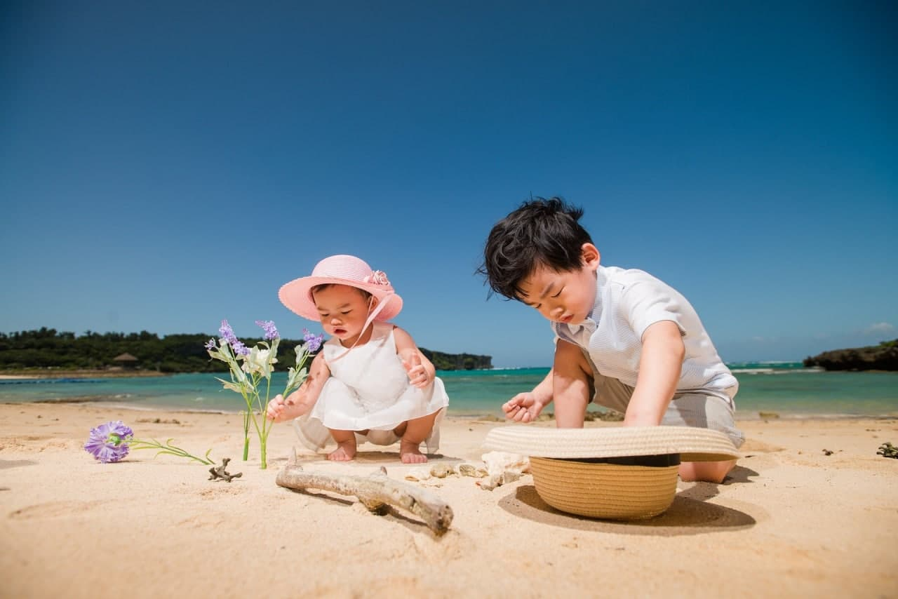
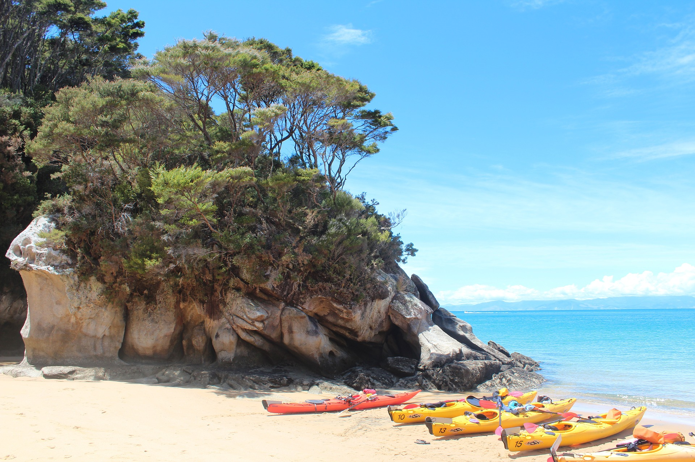
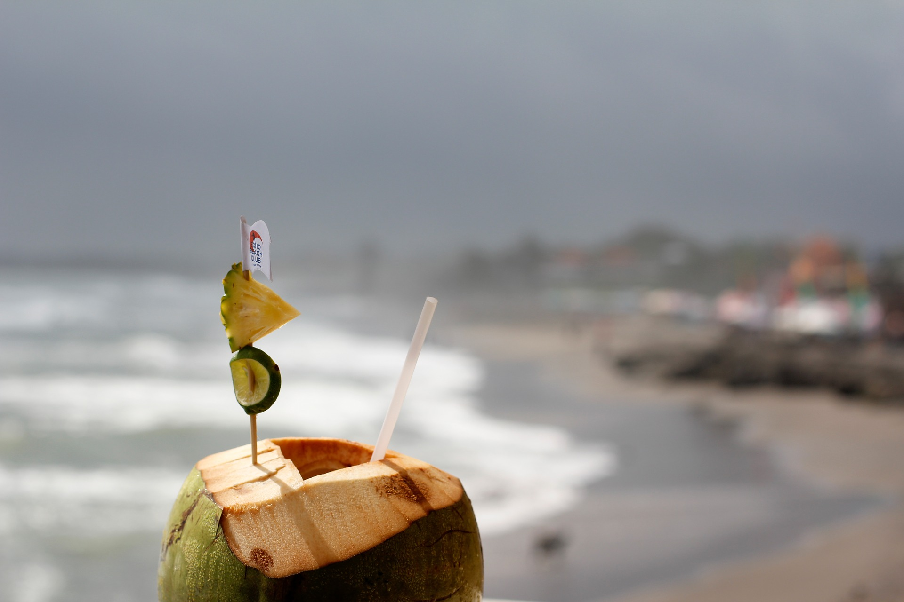

Pulau Lang Tengah– Pulau Kebanggaan Orang Dungun
Pulau Lang Tengah merupakan pulau kecil yang terpencil yang terletak di antara Pulau Redang dan Pulau Perhentian. Pulau Lang Tengah berada kira-kira 40 km ke arah utara Kuala Terengganu dan kira-kira 22 km dari pesisiran pantai semenanjung.
Anda boleh ke sini dengan menaiki bot di Jeti Merang yang terletak dalam Daerah Besut ( Jangan terkeliru dengan jeti Marang di dalam Daerah Marang). Hanya terdapat dua perjalanan bot ke pulau dalam sehari iaitu pada waktu pagi dan tengahari. Kebiasaanya orang ke sini lebih untuk honeymoon kerana Pulau di sini lebih kurang pengunjung kalau nak dibandingkan dengan Redang dan Perhentian. Aktiviti snorkeling untuk melihat coral dan hidupan marin sememangnya bertaraf dunia.
Kalau anda bercadang nak honeymoon ke Pulau Lang Tengah, seeloknya pergi selain musim tengkujuh. Waktu terbaik adalah di antara bulan May-Oktober. Kalau bernasib baik, anda boleh melawat tapak sarang penyu hijau yang bertelur pada bulan May – September setiap tahun.
Memandangkan perairan di Pulau Redang dan Lang Tengah adalah sama, maka anda boleh menjangkakan keindahan di sini juga setanding dengan Pulau Perhentian. Resort tepi pantai yang ada di Pulau Lang Tengah cuma 4 iaitu Sari Pacifica Hotel & Spa, Summer Bay Resort, D’coconut Lagoon dan Lang Sari Resort.

Peta ke Pulau Lang Tengah



Pulau Lang Tengah, merupakan pulau terpencil yang sangat menarik untuk percutian di atas pulau dan pantai yang cukup indah.